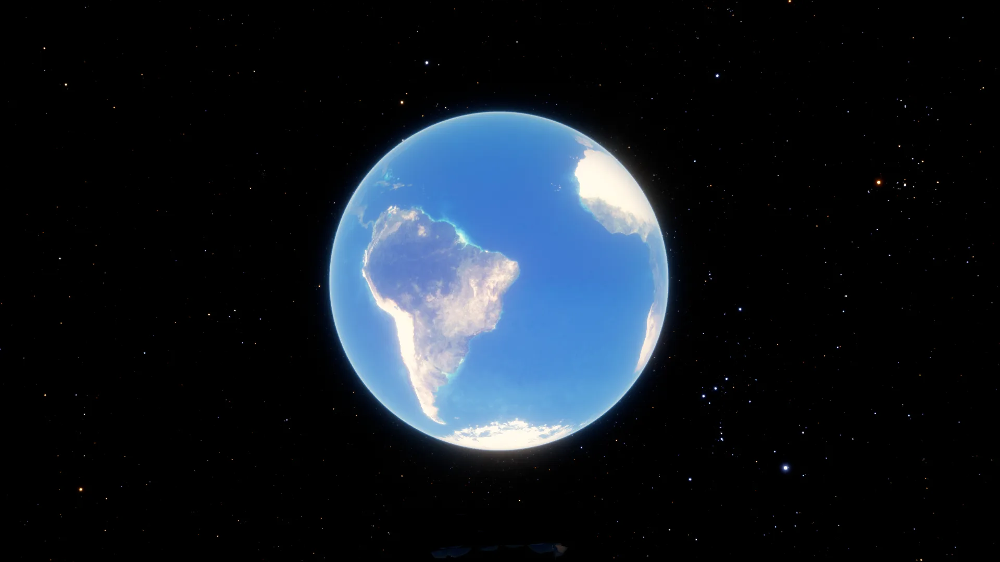
01 · TERRE
La Terre, la vraie
Relief réel, nuages, jour et nuit, éclipses. On décolle du pas de tir, virage gravitationnel jusqu'à l'orbite.
Chaque pixel est un photon suivi à rebours dans l'espace-temps courbé par un trou noir en rotation. Ce que vous voyez, c'est ce que la relativité générale prédit — pas un effet visuel.
Le disque apparaît au‑dessus et au‑dessous du trou : ses rayons sont courbés par‑dessus l'horizon. Anneaux d'Einstein, images secondaires, ombre décalée par la rotation.
Le côté du disque qui vient vers vous brille et bleuit, l'autre s'éteint. La gravité rougit la lumière qui s'échappe des profondeurs.
La métrique conçue pour Interstellar : une sphère qui montre un autre ciel — notre Voie lactée d'un côté, Gargantua de l'autre.
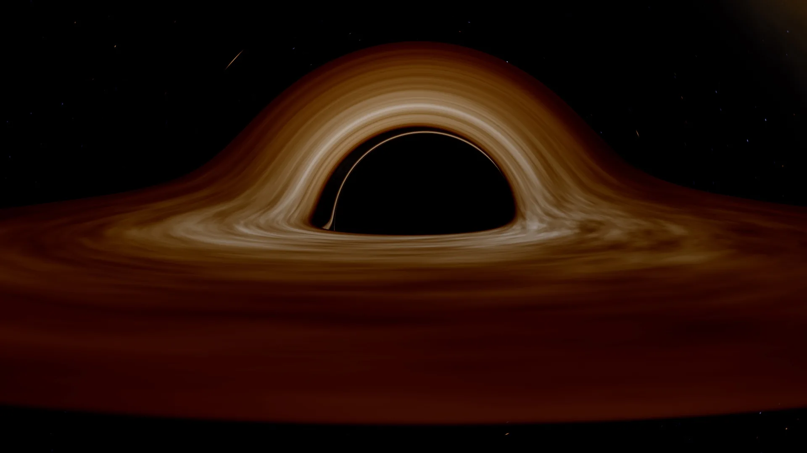
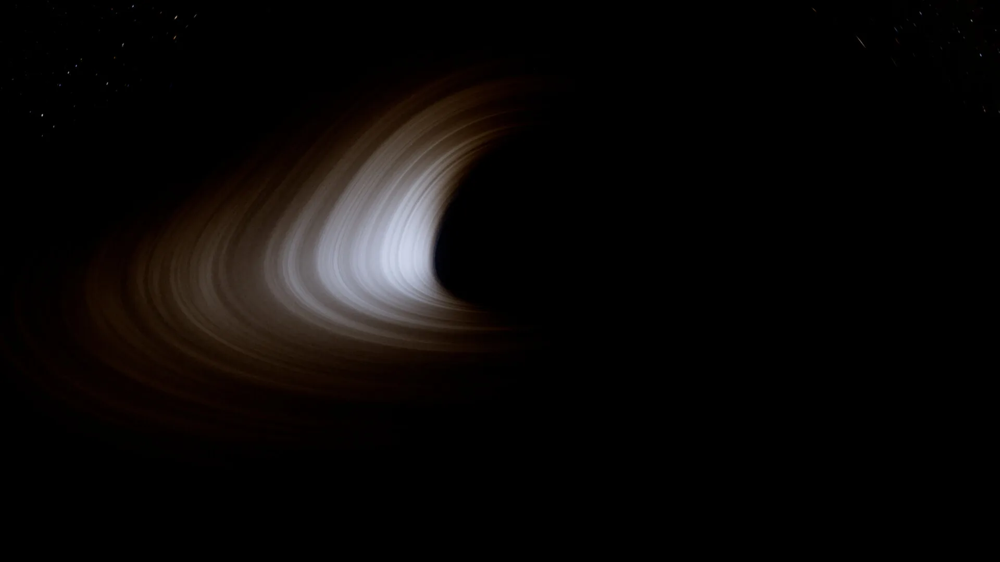
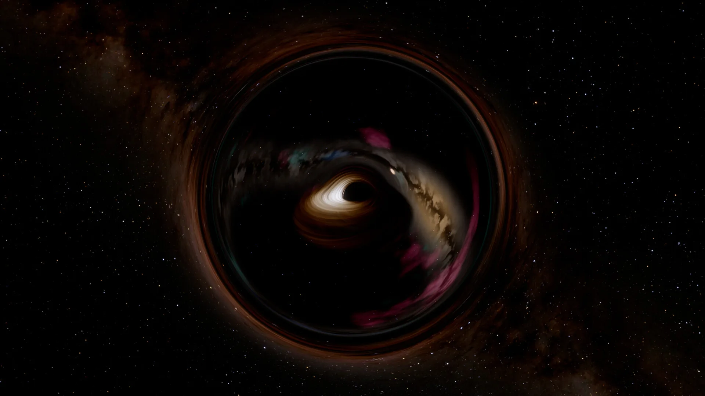
1er janvier 2067, Kennedy Space Center. Le Système solaire est à l'échelle, chaque planète à sa vraie place. Gargantua attend derrière Saturne.

Relief réel, nuages, jour et nuit, éclipses. On décolle du pas de tir, virage gravitationnel jusqu'à l'orbite.
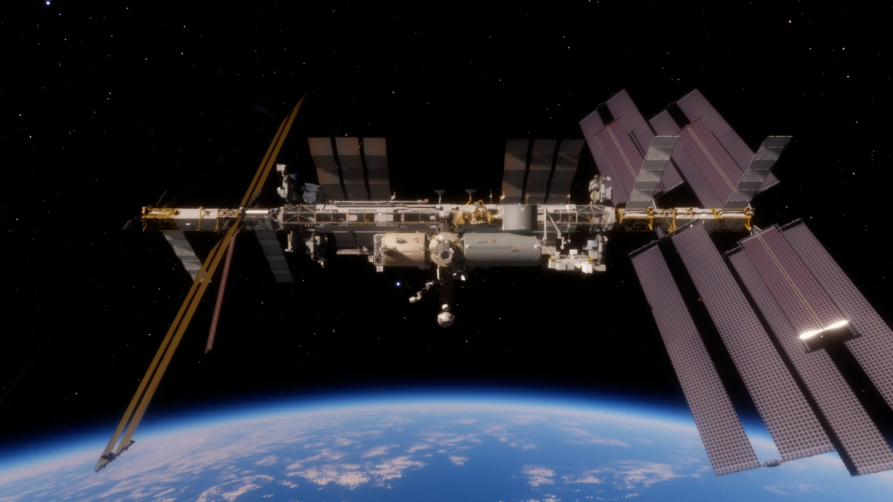
Sur son orbite réelle du jour. Rendez‑vous, approche, et amarrage au port Harmony.
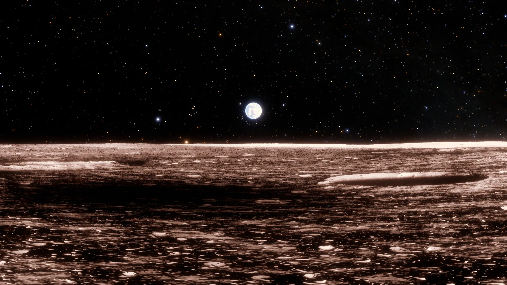
Le tour de la Lune d'Artemis II, planifié en n corps et exécuté par l'ordinateur de bord.
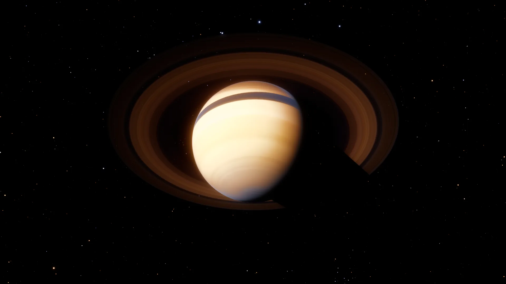
Transfert interplanétaire, anneaux et ombres. Le trou de ver orbite 0,7 UA derrière.
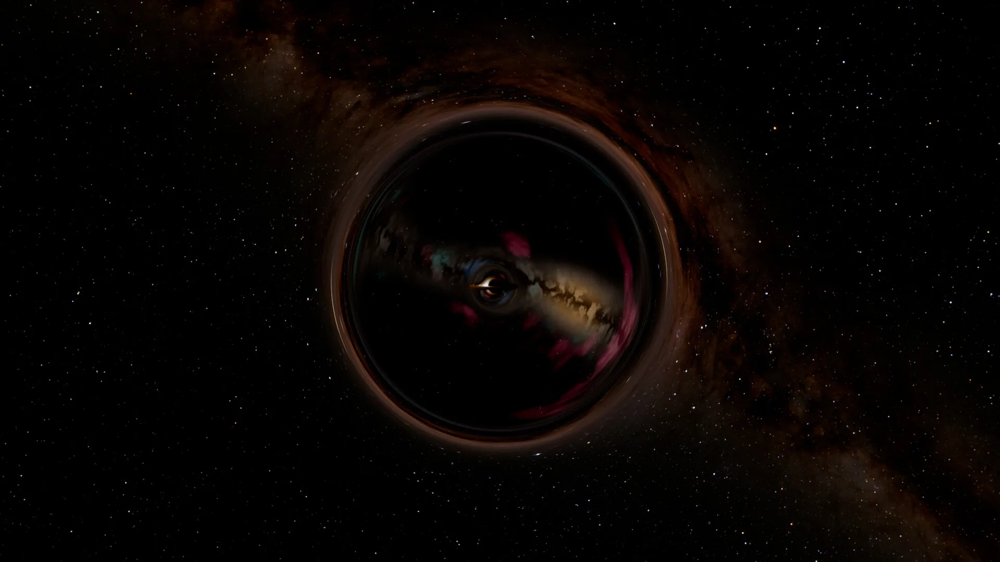
Une autre galaxie dans une sphère. On y entre en visant juste.
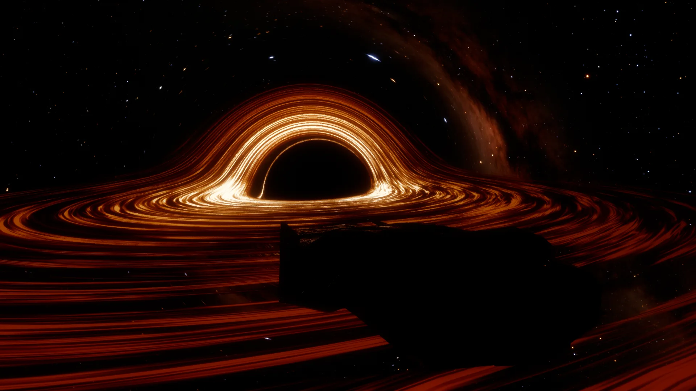
Le Ranger autour du trou noir : les horloges du bord et celles de la Terre ne battent plus au même rythme.
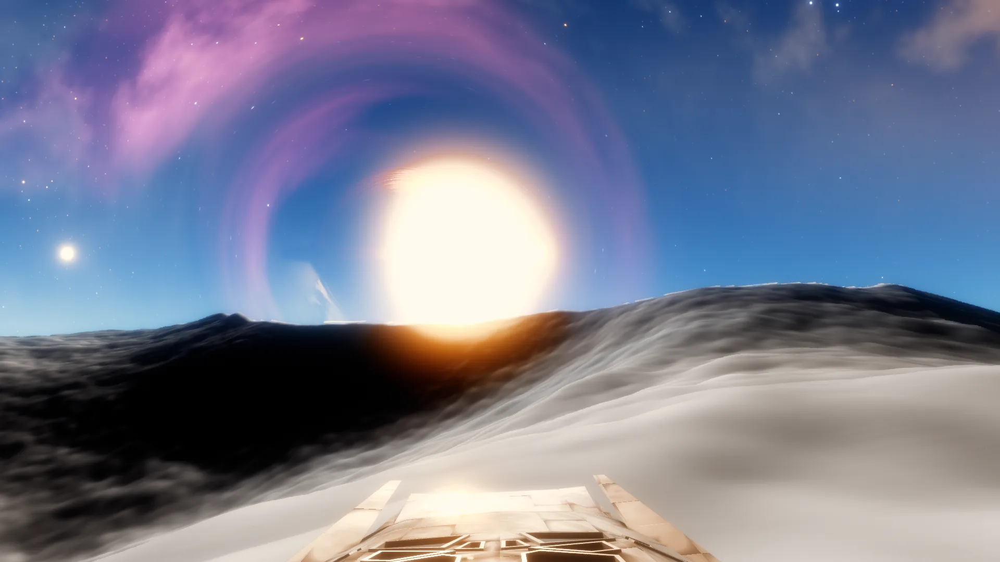
L'océan, la glace, le désert. On s'y pose, on en redécolle.

La rentrée, le plasma, le plané, la finale et le toucher : chaque étape calculée, chaque instrument vivant.
Une vingtaine de commandes au pointeur, huit écrans à pages (PFD, orbite, navigation, systèmes, amarrage, plan, approche, atterrissage), les lumières de la cabine et de la coque.
Orage, brouillard, vent qui tourne avec l'altitude — ou le vrai METAR de la piste. Balisage, PAPI, guidage MLS, minima, remise de gaz.
Chaque autopilote affiche ses étapes, sa prédiction et son graphe : le couloir de rentrée, la pente d'approche, le Δv d'une poussée. Un rapport de vol noté sur 20.
Douze profils de HOTAS reconnus, ou le vôtre : chaque axe, sa courbe, sa zone morte, chaque bouton lié à une action.
Les annonces de finale, Houston avec le délai de la lumière, la coupure radio dans le plasma, la tour, la musique aux grands moments.


Parlez‑lui, ou écrivez‑lui. TARS connaît tout le vaisseau, chaque consigne de chaque autopilote, et peut tout faire dans le jeu — avec sa voix, son humour, et sa mémoire de vous.
Il planifie la mission, accélère le temps, attend la capture, circularise — et vous le dit. Un ordre s'exécute sans confirmation ; « annule » revient en arrière.
Les chiffres d'abord, rien n'est fait : vous acceptez ou refusez. Trois modes — agir, proposer, observer.
Télémétrie en direct, couloir de rentrée, écrans du jeu ; ses réflexes le réveillent à la fin d'un autopilote, à chaque phase de la rentrée, sur une alerte ou un écart.
Pour une analyse en plusieurs regards, il lance des copies de lui‑même, puis décide.
« /teleport orbit Lune 100 », « /cockpit », « /autopilot entry Edwards » : des commandes complétées en tapant, sans le modèle, sans coût.

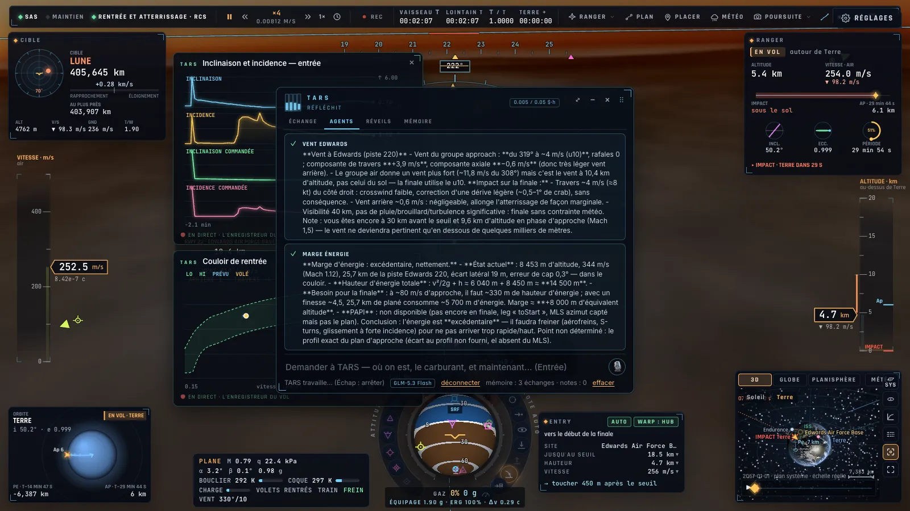
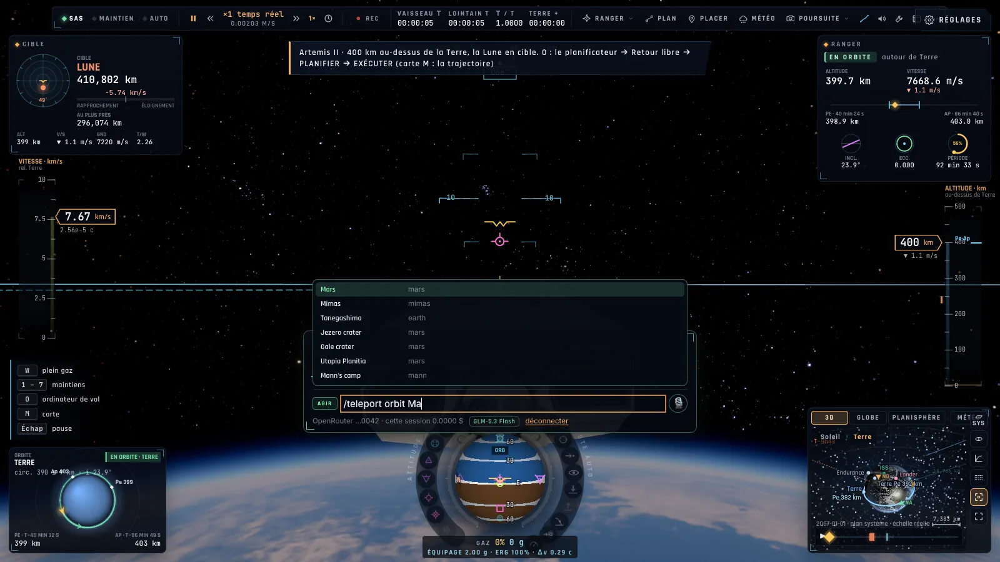
Avec votre propre clé OpenRouter (connexion en un clic, gardée dans votre navigateur). Sans clé, TARS répond et obéit aux ordres courants hors ligne.
Pilotage à la Kerbal Space Program, planificateur de vol, carte 3D, cockpit vivant — et des autopilotes quand vous voulez regarder par le hublot. Sans installation, et même hors ligne.

Écrans de télémétrie en direct, manches qui bougent avec vos commandes, et une vue cabine pour regarder autour de soi.

Trajectoires prédites, nœuds de manœuvre à tirer à la souris, frise temporelle, globe et planisphère avec la trace au sol.

Orbite, survol, retour libre, rendez‑vous, trou de ver : les trajectoires sont visées en n corps, les allumages se font seuls.

Maintiens d'attitude, circularisation, approche, atterrissage, décollage et amarrage automatiques.

88 constellations, les étoiles nommées, grilles équatoriale et horizontale, et un télescope qui suit sa cible.

AZERTY ou QWERTY, manette Xbox ou PlayStation, ou un manche et une manette des gaz au doigt sur téléphone.
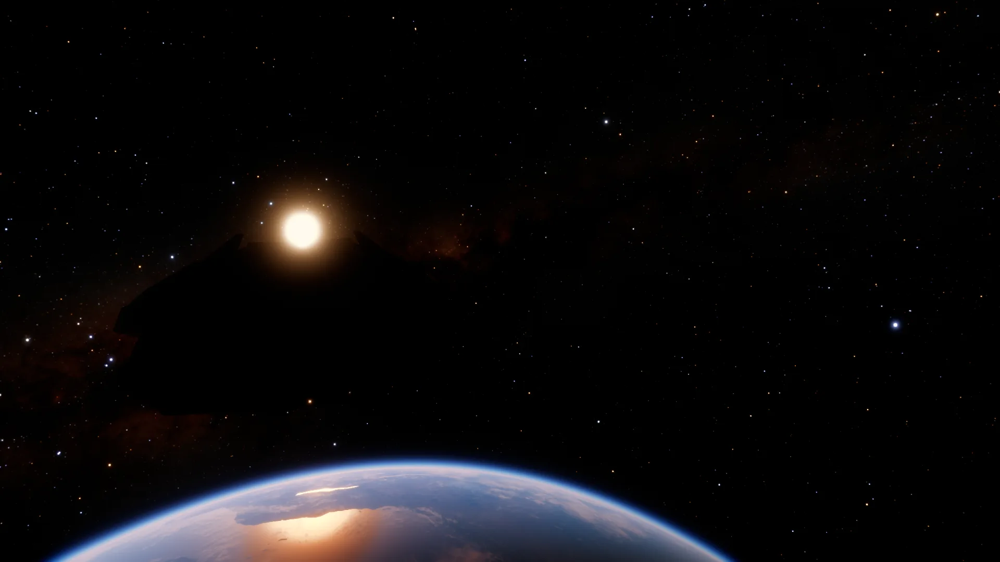
Moteur granulaire, RCS, vent, cabine, son 3D au casque, Doppler et bang ; les annonces de finale, Houston et la tour à la radio, la musique aux grands moments — tout est généré en direct.
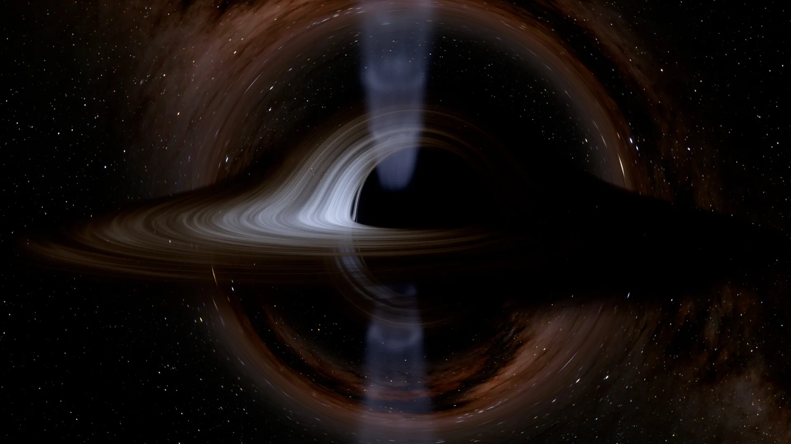
Rendu hors ligne à n'importe quelle résolution, export PNG 16 bits et EXR, prises de vue rejouées en vidéo.
Le Ranger plonge dans la bouche et ressort de l'autre côté, face à Gargantua. Rendu par le simulateur, image par image.
Toutes ces images sortent du simulateur. Le carnet complet des rendus et de leur physique est dans l'Atlas de Kerr.
Ouvrez la page, appuyez sur U : le Ranger quitte le pas de tir. Le reste du chemin jusqu'à Gargantua, c'est vous qui le tracez — ou appuyez sur F6 et demandez‑le à TARS.
Navigateur avec WebGPU : Chrome, Edge ou Arc récents · Safari avec WebGPU activé